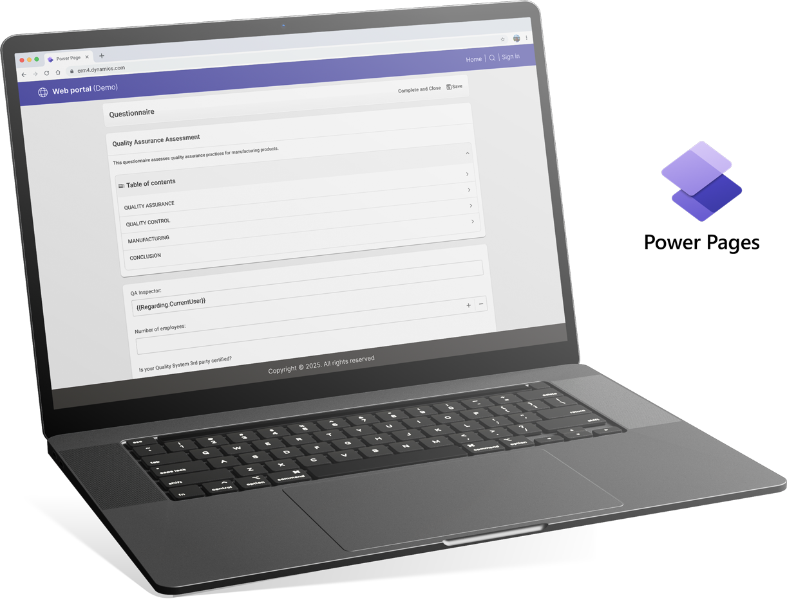

Hello, John Smith.
Welcome to Resco Forms
Equip your frontline teams with a robust digital solution to simplify data collection and reporting. Handle inspections and audits effortlessly, even in remote locations, and create comprehensive reports on the spot.
Product list
Questionnaire Designer
A flexible tool for creating smart digital forms and surveys. Design questionnaires with conditional logic, custom layouts, and dynamic data to streamline data collection in the field.
Open →Report Designer
A powerful tool for building custom PDF or Word reports. Easily transform collected data into professional, branded documents with full control over layout, style, and logic.
Open →Templates
A list of published questionnaires ready for use. Open any template to start collecting data instantly in the app.
Open →Answers
A list of questionnaires that are completed or in progress. Easily review, edit, or continue filling out saved responses.
Open →Result Viewer
Displays all completed and in-progress questionnaires. You can filter results by various criteria, export them to .csv, and view individual forms or aggregated summaries over a selected period.
Open →
Accelerate Power Pages Creation with Our Demo Questionnaire Solution
Jump-start your Power Pages project with our lightweight Dynamics 365 demo solution, built on top of the Resco Suite. Get the Questionnaire component up and running instantly for rapid testing and prototyping.
Key Highlights:
- Pre-configured Questionnaire component for immediate use
- Seamless integration with Power Pages
- Optimized for rapid testing and prototyping
Resources
Modernized Questionnaire Player
Discover the next generation of the Player — redesigned with a modern user interface, improved performance, and built-in accessibility.
Learn more →Questionnaire Designer
Questionnaire Designer is a web application that runs in a web browser. It is one of the main components of Resco Forms that allows users to build questionnaires in a data-driven user interface.
Learn more →Questionnaire Designer examples
Unlock the potential of Resco Forms to streamline your workflow and enhance productivity. Experience real-time data capture, improved accuracy, and seamless integration with your existing systems.
Learn more →Best practices for deploying Forms
Deploying Forms in large projects without considering performance can degrade user experience. Learn potential issues and configure questionnaires properly to avoid risks.
Learn more →Create professional inspection reports instantly on your device
Resco Forms lets you create and share polished reports without paperwork, using built-in templates or fully customized designs via the Report Designer.
Learn more →